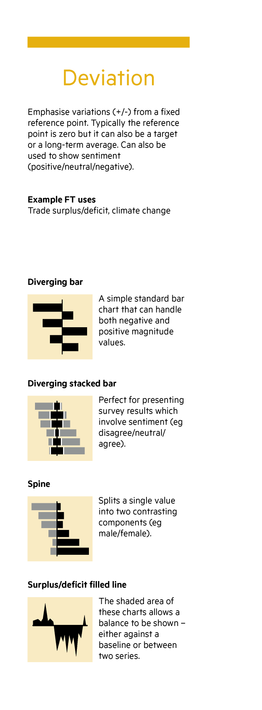
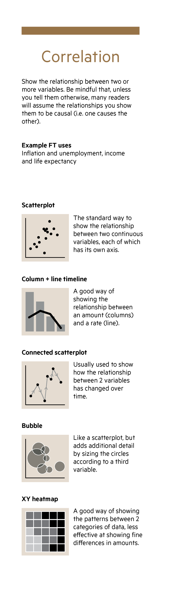
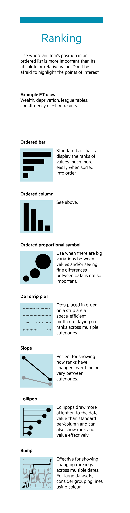
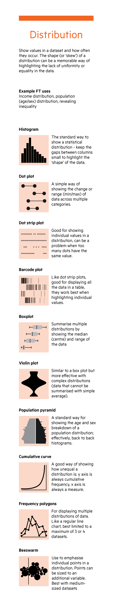
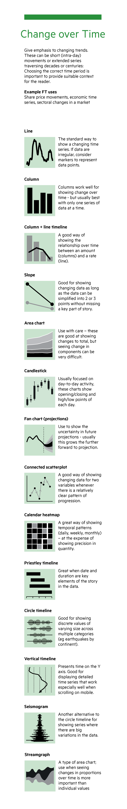
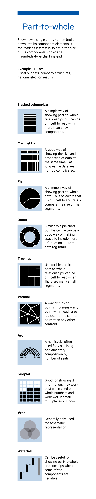
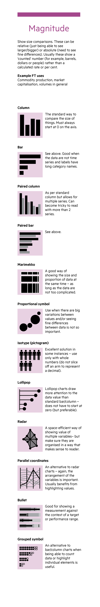
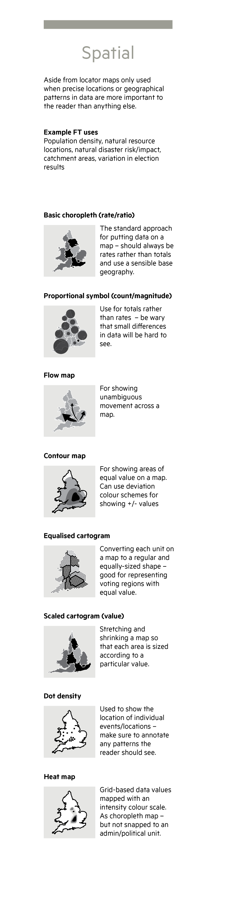
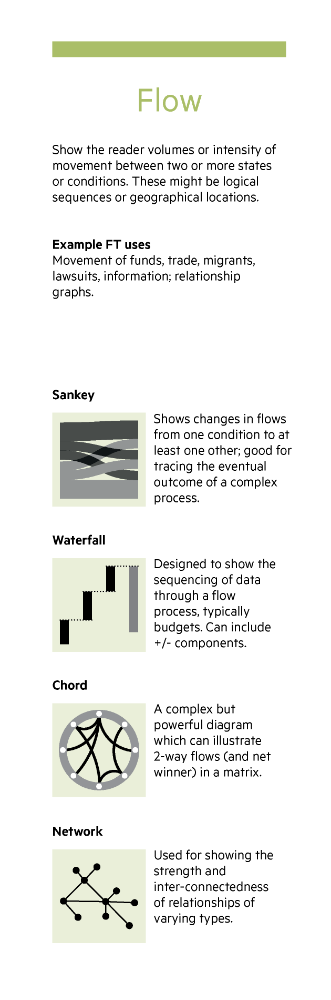

FT visual vocabulary
Notes
A remash of the FT’s poster to be easier to use in this context.
Github repo also has lots of links that I’ve taken out here.
From Data to Viz also has (among other ways in) a similar listing by graph type. added a couple as see also:
Designing with data
There are so many ways to visualise data - how do we know which one to pick? Use the categories across the top to decide which data relationship is most important in your story, then look at the different types of chart within the category to form some initial ideas about what might work best. This list is not meant to be exhaustive, nor a wizard, but is a useful starting point for making informative and meaningful data visualisations.
Deviation
Emphasise variations +/- from a fixed reference point (typically zero, but can also be a target or long-term average). Also used to show sentiment (pos/neg/neutral)
Diverging bar
A simple standard bar chart that can handle both negative and positive magnitude values.
Diverging stacked bar
Perfect for presenting survey results which involve sentiment (eg disagree/neutral/agree).
Spine chart
Splits a single value into 2 contrasting components (eg Male/Female)
Surplus/deficit filled line
The shaded area of these charts allows a balance to be shown – either against a baseline or between two series.
deviation / correlation


Correlation
Show the relationship between two or more variables. Be mindful that many readers will assume the relationships are causal unless told otherwise.
Scatterplot
The standard way to show the relationship between two continuous variables, each of which has its own axis.
Line + Column
A good way of showing the relationship between an amount (columns) and a rate (line)
Connected scatterplot
Usually used to show how the relationship between two variables has changed over time.
Bubble
Like a scatterplot, but adds additional detail by sizing the circles according to a third variable
XY heatmap
A good way of showing the patterns between 2 categories of data, less good at showing fine differences in amounts.
see also: Correlogram
in data-to-viz https://www.data-to-viz.com/graph/correlogram.html
Ranking
Use where an item’s position in an ordered list is more important than its absolute or relative value. Don’t be afraid to highlight the points of interest.
Ordered bar
Standard bar charts display the ranks of values much more easily when sorted into order
Ordered column
See above.
Ordered proportional symbol
Use when there are big variations between values and/or seeing fine differences between data is not so important.
Dot strip plot
Dots placed in order on a strip are a space-efficient method of laying out ranks across multiple categories.
Slope
Perfect for showing how ranks have changed over time or vary between categories.
Lollipop chart
Lollipops draw more attention to the data value than standard bar/column and can also show rank and value effectively.
ranking / distribution


Distribution
Show values in a dataset and how often they occur. The shape (or ‘skew’) of a distribution can be a memorable way of highlighting the lack of uniformity or equality in the data. (age/sex) distribution
Histogram
The standard way to show a statistical distribution - keep the gaps between columns small to highlight the ‘shape’ of the data
Boxplot
Summarise multiple distributions by showing the median (centre) and range of the data
Violin plot
Similar to a box plot but more effective with complex distributions (data that cannot be summarised with simple average).
Population pyramid
A standard way for showing the age and sex breakdown of a population distribution; effectively, back to back histograms.
Dot strip plot
Good for showing individual values in a distribution, can be a problem when too many dots have the same value.
Dot plot
A simple way of showing the change or range (min/max) of data across multiple categories.
Barcode plot
Like dot strip plots, good for displaying all the data in a table,they work best when highlighting individual values.
Cumulative curve
A good way of showing how unequal a distribution is: y axis is always cumulative frequency, x axis is always a measure.
see also: ridgeline plot
not in FT list but in data-to-viz https://www.data-to-viz.com/graph/ridgeline.html
Change over Time
Give emphasis to changing trends. These can be short (intra-day) movements or extended series traversing decades or centuries. Choosing the correct time period is important to provide suitable context for the reader.
Line
The standard way to show a changing time series. If data are irregular, consider markers to represent data points
Column
Columns work well for showing change over time - but usually best with only one series of data at a time.
Line + column
A good way of showing the relationship over time between an amount (columns) and a rate (line)
Stock price
Usually focused on day-to-day activity, these charts show opening/closing and hi/low points of each day
Slope
Good for showing changing data as long as the data can be simplified into 2 or 3 points without missing a key part of story
Area chart
Use with care – these are good at showing changes to total, but seeing change in components can be very difficult
Fan chart (projection)
Use to show the uncertainty in future projections - usually this grows the further forward to projection
Connected scatterplot
A good way of showing changing data for two variables whenever there is a relatively clear pattern of progression.
Calendar heatmap
A great way of showing temporal patterns (daily, weekly, monthly) – at the expense of showing precision in quantity.
Priestley timeline
Great when date and duration are key elements of the story in the data.
Circle timeline
Good for showing discrete values of varying size across multiple categories (eg earthquakes by contintent).
Seismogram
Another alternative to the circle timeline for showing series where there are big variations in the data.
change over time / part-to-whole


Part-to-whole
Show how a single entity can bebroken down into its component elements. If the reader’s interest issolely in the size of the components,consider a magnitude-type chartinstead.
Stacked column
A simple way of showing part-to-whole relationships but can be difficult to read with more than a few components.
Proportional stacked bar
A good way of showing the size and proportion of data at the same time – as long as the data are not too complicated.
Pie
A common way of showing part-to-whole data – but be aware that it’s difficult to accurately compare the size of the segments.
Donut
Similar to a pie chart – but the centre can be a good way of making space to include more information about the data (eg. total)
Treemap
Use for hierarchical part-to-whole relationships; can be difficult to read when there are many small segments.
Voronoi
A way of turning points into areas – any point within each area is closer to the central point than any other centroid.
Arc
A hemicycle, often used for visualising political results in parliaments.
Gridplot [waffle]
Good for showing % information, they work best when used on whole numbers and work well in multiple layout form.
Venn
Generally only used for schematic representation
Waterfall
Can be useful for showing part-to-whole relationships where some of the components are negative.
Magnitude
Show size comparisons. These can be relative (just being able to see larger/bigger) or absolute (need to see fine differences). Usually these show a ‘counted’ number (for example, barrels, dollars or people) rather thana calculated rate or per cent.
Column
The standard way to compare the size of things. Must always start at 0 on the axis
Bar
See above. Good when the data are not time series and labels have long category names.
Paired column
As per standard column but allows for multiple series. Can become tricky to read with more than 2 series.
Paired bar
See above.
Proportional stacked bar
A good way of showing the size and proportion of data at the same time – as long as the data are not too complicated.
Proportional symbol
Use when there are big variations between values and/or seeing fine differences between data is not so important.
Isotype (pictogram)
Excellent solution in some instances – use only with whole numbers (do not slice off an arm to represent a decimal).
Lollipop chart
Lollipop charts draw more attention to the data value than standard bar/column – does not HAVE to start at zero (but preferable).
Radar chart
A space-efficient way of showing value pf multiple variables– but make sure they are organised in a way that makes sense to reader.
Parallel coordinates
An alternative to radar charts – again, the arrngement of the variables is important. Usually benefits from highlighting values.
magnitude / spatial


Spatial
Used only when precise locations orgeographical patterns in data aremore important to the reader thananything else.
Basic choropleth (rate/ratio)
The standard approach for putting data on a map – should always be rates rather than totals and use a sensible base geography
Proportional symbol (count/magnitde)
Use for totals rather than rates – be wary that small differences in data will be hard to see.
Flow map
For showing unambiguous movement across a map.
Contour map
For showing areas of equal value on a map. Can use deviation colour schemes for showing +/- values
Equalised cartogram
Converting each unit on a map to a regular and equally-sized shape – good for representing voting regions with equal value.
Scaled cartogram (value)
Stretching and shrinking a map so that each area is sized according to a particular value.
Dot density
Used to show the location of individual events/locations – make sure to annotate any patterns the reader should see.
Heat map
Grid-based data values mapped with an intensity colour scale. As choropleth map – but not snapped to an admin/political unit.
Flow
Show the reader volumes or intensity of movement between two or more states or conditions. These might be logical sequences or geographical locations.
Sankey (aka river plot)
Shows changes in flows from one condition to at least one other; good for tracing the eventual outcome of a complex process.
Waterfall
Designed to show the sequencing of data through a flow process, typically budgets. Can include +/- components.
Chord
A complex but powerful diagram which can illustrate 2-way flows (and net winner) in a matrix.
Network
Used for showing the strength and inter-connectedness of relationships of varying types.
flow
